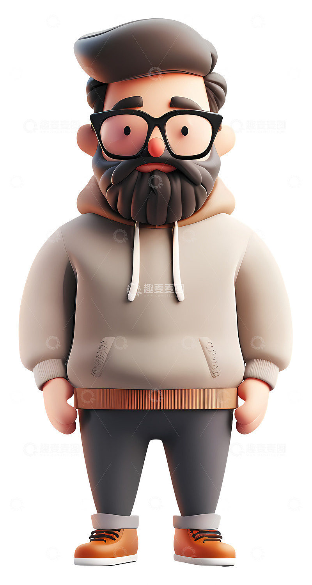

个人简历

紫咚 (Zidong)用户体验设计专家 / 设计总监10年+ 跨国企业设计与管理经验 | 专注于复杂B端与C端体验创新电话：19874102647| 邮箱：zidong1107@gmail.com | 领英：zidong1107 | 作品集：https:// www.zidong_portfolio.com
个人简介
“以严谨的视觉细节，构建酷炫且富有温度的数字体验。”拥有10年跨国企业设计与管理经验，现任外企设计总监。核心领域涵盖用户体验策略、交互设计、设计系统构建及跨职能团队管理。
核心能力
• 设计战略与领导力：10年经验沉淀，擅长从0到1搭建并管理高效能设计团队，制定与公司商业目标一致的设计战略。
• 用户体验与交互设计：深度洞察用户需求，精通用户旅程地图、信息架构、高保真原型制作，擅长解决复杂业务场景下的体验痛点。
• 视觉表现与设计系统：对“暗黑模式”、“磨砂玻璃质感 (Glassmorphism)”等前沿视觉风格有深入研究。擅长构建高复用、高一致性的企业级设计系统 (Design System)。
• 跨部门协作与沟通：拥有丰富的外企工作经验，能够流利使用中英双语与产品、研发、市场及高层管理团队高效协同，推动设计落地。
• 数据驱动与增长：熟练运用A/B测试、用户调研及数据分析工具，以数据验证设计假设，持续优化产品体验并助力业务增长。
工作经历
某知名外企 | 设计总监 (Design Director) (近3年)
• 全面负责公司核心产品的用户体验设计战略与团队管理。
• 主导设计系统 (Design System) 的重构与升级，统一了跨平台视觉规范，将设计与研发协作效率提升 40%。
• 带领团队完成产品从传统界面到“暗黑/磨砂”现代视觉风格的平滑演进，显著提升了品牌科技感与用户留存率。
• 建立并完善用户研究机制，将用户反馈直接转化为产品迭代方向。
某科技公司 | 高级用户体验设计师 / 设计主管 (第4-7年)
• 负责多条产品线的交互与视觉设计，独立主导多个千万级用户量产品的体验改版。
• 搭建并带领5人设计小组，负责设计评审、人才培养及项目排期。
• 与产品经理紧密合作，通过用户体验优化，帮助核心业务流程转化率提升 25%。
某互联网公司 | 用户体验设计师 (第1-3年)
• 参与移动端及Web端产品的需求分析、原型设计与视觉输出。
• 深入业务一线，积累了大量用户访谈与可用性测试的实战经验。
• 打下扎实的设计基本功，培养了严谨的视觉细节把控能力。
负责的设计项目
项目一：企业级 SaaS 数据中台体验升级角色：设计总负责人成果：针对复杂的数据可视化需求，重新设计了暗色系数据看板。通过优化信息层级和交互逻辑，使客户分析数据的效率提升 50%。
项目二：跨国电商 App 视觉与交互重构角色：设计总监成果：引入“磨砂玻璃”与微交互设计，打造沉浸式购物体验。项目上线后，用户日均使用时长增加 18%，购买转化率提升 12%。
项目三：智能硬件配套 App 设计系统搭建角色：设计系统架构师成果：从零构建了一套支持多端（iOS/Android/Web）的设计系统，包含 200+ 组件。极大地降低了设计走查成本，保证了品牌视觉的极度严谨与统一。